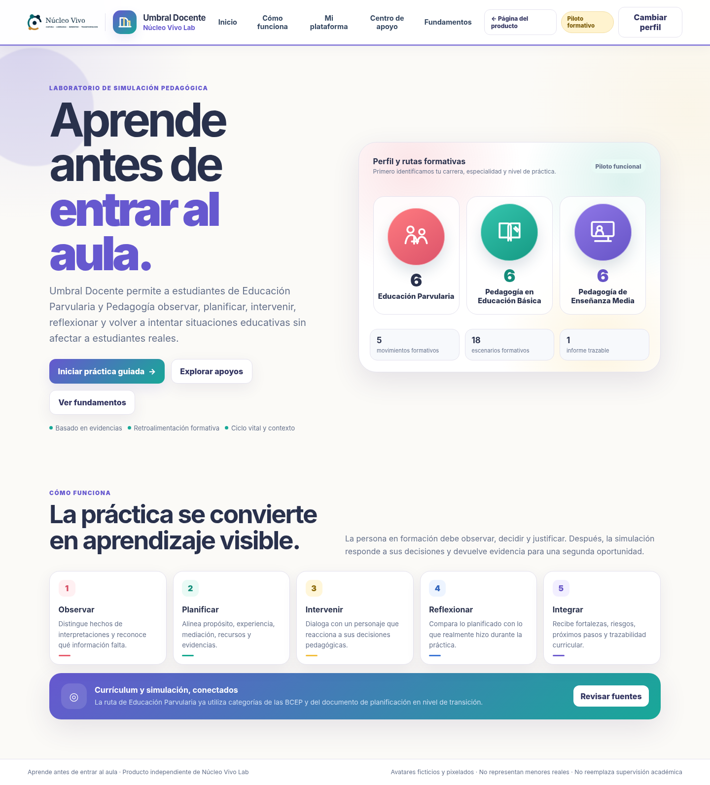

Perfil por carrera
Configura Educación Parvularia, Básica, Media, Diferencial o Técnico Profesional.

Formación docente · Práctica pedagógica
Umbral Docente ayuda a observar, planificar, intervenir y reflexionar en situaciones educativas simuladas, con rutas pertinentes para distintas carreras y ciclos.

Una ruta formativa completa
La experiencia adapta casos y herramientas a la carrera, ciclo, especialidad y etapa de práctica. Cada recorrido convierte una intención pedagógica en decisiones observables.
Configura Educación Parvularia, Básica, Media, Diferencial o Técnico Profesional.
Seis casos por ciclo, con avatares ficticios, contexto y foco curricular.
Organiza diagnóstico, secuencia, evaluación, diversificación y revisión.
Relaciona intervención, evidencia, efecto simulado y próximo paso.
Cómo funciona
Distingue hechos, hipótesis, contexto y señales observables.
Define propósito, experiencia, apoyo, adaptación y evidencia.
Interviene en un diálogo y observa respuestas simuladas.
Analiza efectos, revisa decisiones y proyecta el próximo ensayo.
Versión piloto
Todos los personajes y escenarios son ficticios. El piloto busca apoyar el aprendizaje deliberado y no reemplaza la práctica supervisada ni el juicio docente situado.
Piloto público